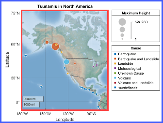

GeographicBubbleChart Properties
Standalone geographic bubble chart appearance and behavior
GeographicBubbleChart properties control the appearance and
behavior of a GeographicBubbleChart object. By changing property
values, you can modify certain aspects of the chart. Use dot notation to query and set
properties.
gb = geobubble(1:10,1:10); v = gb.GridVisible; gb.GridVisible = "off";
Bubble Location
Bubble Size
Bubble Color
Labels
Font
Map
Map on which to plot data, specified as one of the values listed in the table. Six of the basemaps are tiled data sets created using Natural Earth. Five of the basemaps are high-zoom-level maps hosted by Esri®.
|
|
Map designed to provide geographic context while highlighting user data on a light background. Hosted by Esri. |
|
Map designed to provide geographic context while highlighting user data on a dark background. Hosted by Esri. |
|
|
General-purpose road map that emphasizes accurate, legible styling of roads and transit networks. Hosted by Esri. |
|
Full global basemap composed of high-resolution satellite imagery. Hosted by Esri. |
|
|
General-purpose map with styling to depict topographic features. Hosted by Esri. |
|
Map that combines satellite-derived land cover data, shaded relief, and ocean-bottom relief. The light, natural palette is suitable for thematic and reference maps. Created using Natural Earth. |
|
|
Shaded relief map blended with a land cover palette. Humid lowlands are green and arid lowlands are brown. Created using Natural Earth. |
|
Terrain map in shades of gray. Shaded relief emphasizes both high mountains and micro-terrain found in lowlands. Created using Natural Earth. |
|
|
Two-tone, land-ocean map with light green land areas and light blue water areas. Created using Natural Earth. |
|
Two-tone, land-ocean map with gray land areas and white water areas. Created using Natural Earth. |
|
|
Two-tone, land-ocean map with light gray land areas and dark gray water areas. This basemap is installed with MATLAB. Created using Natural Earth. |
Blank background that plots your data with a latitude-longitude grid, ticks, and labels. |


All basemaps except 'darkwater' require Internet access. The
'darkwater' basemap is included with MATLAB.
If you do not have consistent access to the Internet, you can download the basemaps created using Natural Earth onto your local system by using the Add-On Explorer. The five high-zoom-level maps are not available for download. For more about downloading basemaps and changing the default basemap on your local system, see Access Basemaps for Geographic Axes and Charts.
The basemaps hosted by Esri update periodically. As a result, you might see differences in your visualizations over time.
Alignment of boundaries and region labels are a presentation of the feature provided by the data vendors and do not imply endorsement by MathWorks®.
Data Types: char | string
Source table containing the data to plot, specified as a table or timetable.
Visibility of the grid lines, specified as 'on' or
'off', or the logical values 1
(true) or 0
(false).
Alternatively, you can toggle the visibility of the grid lines by using
the grid function.
Data Types: logical | char | string
This property is read-only.
Latitude limits of the map, returned as a two-element vector of the form
[latmin latmax]. Each element is in the range [–90,
90] degrees.
Change the latitude limits by using the geolimits function.
The latitude limits do not change when you resize the chart by resizing the window, except to adapt to changes in the aspect ratio of the map.
Example: [-85 85]
Data Types: double
This property is read-only.
Longitude limits of map, returned as a two-element vector of the form
[lonmin lonmax].
Change the longitude limits by using the geolimits function.
The longitude limits do not change when you resize the chart by resizing the window, except to adapt to changes in the aspect ratio of the map.
Example: [-100 100]
Data Types: double
Center point of the map, specified as a two-element numeric vector of the
form [center_latitude center_longitude], where
center_latitude is the latitude in degrees and
center_longitude is the longitude in degrees. The
latitude value must be in the range (–90, 90).
Data Types: single | double
Layout of the map, including the insets and decorations, specified as
'normal' or 'maximized'.
| Value | Description | Illustration |
|---|---|---|
'normal' | Map is inset from the edges of the chart, as defined by its
OuterPosition property. The axes labels, ticks,
and tick labels are visible. The title is visible, when specified.
Legends, when present, appear outside and to the right of the
map. |
|
'maximized' | Map fills the entire space, as defined by the
OuterPosition property. The axes labels, ticks,
and tick labels are hidden. The title is hidden, even when specified.
The grid is hidden, even when the GridVisible
property has a value of 'on'. Legends, when present,
appear within the map, toward the upper-right corner. |
|


Data Types: char | string
Visibility of the scale bar on the map, specified as
'on' or 'off', or the logical
values 1 (true) or
0 (false).
Data Types: logical | char | string
Zoom level of the map, specified as a numeric scalar in the range [0, 25].
The value is a base 2 logarithmic map scale. Increasing the
ZoomLevel value by 1 doubles the map scale.
Data Types: single | double
Position
Position property to hold constant when adding, removing, or changing decorations, specified as one of the following values:
"outerposition"— TheOuterPositionproperty remains constant when you add, remove, or change decorations such as a title or an axis label. If any positional adjustments are needed, MATLAB adjusts theInnerPositionproperty."innerposition"— TheInnerPositionproperty remains constant when you add, remove, or change decorations such as a title or an axis label. If any positional adjustments are needed, MATLAB adjusts theOuterPositionproperty.
Note
Setting this property has no effect when the parent container is a
TiledChartLayout object.
Outer size and location, including the labels and legends, specified as a
four-element vector of the form [left bottom width
height]. By default, MATLAB measures the values in units normalized to the parent
container. To change the units, set the Units property.
The default value of [0 0 1 1] includes the whole
interior of the container.
The
leftandbottomelements define the distance from the lower-left corner of the container to the lower-left corner of the geographic bubble chart.The
widthandheightelements are the dimensions of the geographic bubble chart, including a margin for the surrounding labels and legends.
This figure shows the areas defined by the
OuterPosition values (blue) and the
InnerPosition values (red).

Note
Setting this property has no effect when the parent container is a
TiledChartLayout object.
Inner size and location, excluding the labels and legends, specified as a
four-element vector of the form [left bottom width
height]. By default, MATLAB measures the values in units normalized to the parent
container. To change the units, set the Units
property.
The
leftandbottomelements define the distance from the lower-left corner of the container to the lower-left corner of the geographic bubble chart.The
widthandheightelements are the dimensions of the geographic bubble chart, excluding the labels and legends.
This figure shows the areas defined by the
OuterPosition values (blue) and the
InnerPosition values (red).
Note
Setting this property has no effect when the parent container is a
TiledChartLayout object.
Size and location, excluding the labels and legends, specified as a
four-element vector of the form [left bottom width
height]. This property is equivalent to the
InnerPosition property.
Note
Setting this property has no effect when the parent container is a
TiledChartLayout object.
Position units, specified as one of these values.
Units | Description |
|---|---|
'normalized' (default) | Normalized with respect to the container, which is
typically the figure or a panel. The lower left corner
of the container maps to (0,0), and
the upper right corner maps to
(1,1). |
'inches' | Inches |
'centimeters' | Centimeters |
'characters' | Based on the default
|
'points' | Typography points. One point equals 1/72 of an inch. |
'pixels' | Pixels. On Windows® and Macintosh systems, the size of a pixel is 1/96th of an inch. This size is independent of your system resolution. On Linux® systems, the size of a pixel is determined by your system resolution. |
When specifying the units using a name-value argument during object
creation, you must set the Units property before
specifying the properties that you want to use these units, such as
OuterPosition.
Layout options, specified as a TiledChartLayoutOptions or
GridLayoutOptions object. This property is useful when the chart
is either in a tiled chart layout or a grid layout.
To position the chart within the grid of a tiled chart layout, set the
Tile and TileSpan properties on the
TiledChartLayoutOptions object. For example, consider a 3-by-3
tiled chart layout. The layout has a grid of tiles in the center, and four tiles along
the outer edges. In practice, the grid is invisible and the outer tiles do not take up
space until you populate them with axes or charts.

This code places the chart c in the third tile of the
grid.
c.Layout.Tile = 3;
To make the chart span multiple tiles, specify the TileSpan
property as a two-element vector. For example, this chart spans 2
rows and 3 columns of
tiles.
c.Layout.TileSpan = [2 3];
To place the chart in one of the surrounding tiles, specify the
Tile property as "north",
"south", "east", or "west".
For example, setting the value to "east" places the chart in the tile
to the right of the
grid.
c.Layout.Tile = "east";To place the chart into a layout within an app, specify this property as a
GridLayoutOptions object. For more information about working with
grid layouts in apps, see uigridlayout.
If the chart is not a child of either a tiled chart layout or a grid layout (for example, if it is a child of a figure or panel) then this property is empty and has no effect.
Visibility of the geographic bubble chart, specified as
'on' or 'off', or as numeric or
logical 1 (true) or
0 (false). A value of
'on' is equivalent to true, and
'off' is equivalent to false.
Thus, you can use the value of this property as a logical value. The value
is stored as an on/off logical value of type matlab.lang.OnOffSwitchState.
Parent/Child
Version History
Introduced in R2017bThe "streets-light", "streets-dark", "streets", and "topographic" basemaps hosted by Esri have an improved visual appearance at high zoom levels. For example, this image compares a basemap at zoom level 21 in R2023a with the same basemap and zoom level in R2023b.

The basemaps can also have different appearances at other zoom levels. For example, this image compares a basemap at zoom level 15 in R2023a with the same basemap and zoom level in R2023b.